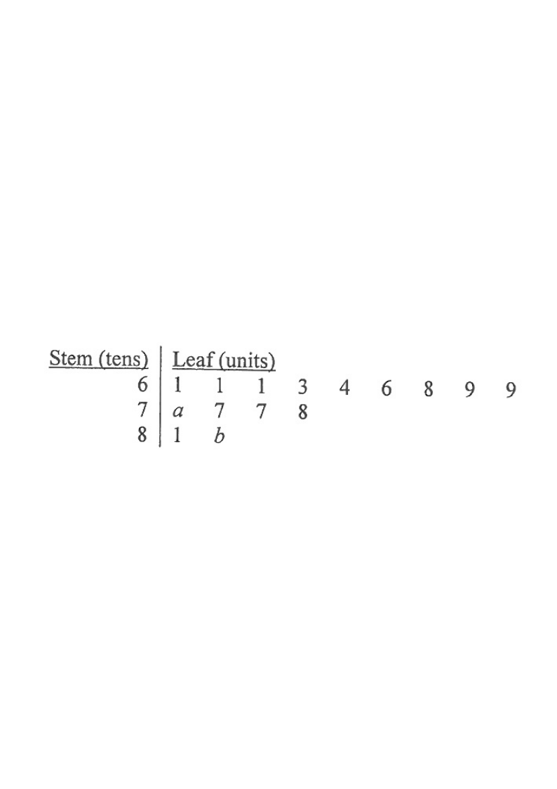

Scroll the solution — the diagram updates with each step.
HKDSE 2017 · Paper 1 · Q11
The stem-and-leaf diagram below shows the distribution of the hourly wages (in dollars) of the workers in a group.
Stem (tens)
Leaf (units)
6
1 1 1 3 4 6 8 9 9
7
a 7 7 8
8
1 b
It is given that the mean and the range of the above distribution are $\$70$ and $\$22$ respectively.
(a) Find the median and the standard deviation of the above distribution. [5 marks]
(b) If a worker is randomly selected from the group, find the probability that the hourly wage of the selected worker exceeds $\$70$. [2 marks]

Figure (original exam diagram)
1Identify the data & unknowns
Reading the diagram: there are $9+4+2=15$ workers. The wages are
$61,61,61,63,64,66,68,69,69,;70+a,;77,77,78,;81,;80+b$.
Hint: stem 7 leaf “a” gives $70+a$; stem 8 leaf “b” gives $80+b$.
2Use the range to link $a$ and $b$
Range $=\text{max}-\text{min}=22$. Smallest value $=61$, so largest $=61+22=83$.
The largest is $80+b$ (since $70+a\le79Hint: the range only involves the extremes — the biggest leaf must be $b$.
3Use the mean to find $a$
$\dfrac{61(3)+63+64+66+68+69(2)+70+a+77(2)+78+81+80+b}{15}=70$
Mean of a Data Set\(\bar{x}=\dfrac{\text{sum of all data}}{n}\)The \(15\) wages have total \(15\times70=1050\), which pins down \(a+b\) once \(b=3\) is known.
With $b=3$: $1006+a+b=1050 \Rightarrow a+b=5 \Rightarrow a=2$.
Hint: total of all 15 wages $=15\times70=1050$.
4Order the 15 values and find the median
$61,61,61,63,64,66,68,69,69,\underset{\uparrow}{\mathbf{72}},77,77,78,81,83$
Median of a Data Set\(\text{median}=x_{\left(\frac{n+1}{2}\right)} \text{ for odd } n\)With \(15\) values the median is the \(8\)th ordered value, namely \(72\).
The $8^{\text{th}}$ value is the median: $\text{median}=\$72$.
Hint: median of $n=15$ is the $\frac{15+1}{2}=8^{\text{th}}$ ordered value.
5Compute the standard deviation
$\sigma=\sqrt{\dfrac{61^2(3)+63^2+64^2+66^2+68^2+69^2(2)+72^2+77^2(2)+78^2+81^2+83^2}{15}-70^2}$
Standard Deviation\(\sigma=\sqrt{\dfrac{\sum x^{2}}{n}-\bar{x}^{2}}\)The wages give \(\sigma=\sqrt{4970-4900}\approx7.33\), correct to 3 significant figures.
$=\sqrt{4970}-\,\text{...}\approx 7.33$ (correct to 3 s.f.).
Hint: $\sigma=\sqrt{\overline{x^2}-\bar{x}^2}$ with $n=15$.
6(b) Count wages exceeding $\$70$
Values $>70$: $72,77,77,78,81,83$ — that is $6$ workers out of $15$.
Hint: “exceeds $70$” means strictly greater than $70$ — so $70+a=72$ counts, but $69$ does not.
7Probability
$P(\text{wage}>70)=\dfrac{6}{15}=\dfrac{2}{5}$.
Hint: reduce the fraction to simplest form for the final answer.
Answer:
(a) Median $=\$72$; standard deviation $\approx 7.33$ (3 s.f.).
(b) $\dfrac{2}{5}$
PRACTICESimilar question — try it yourself
Question. The stem-and-leaf diagram below shows the distribution of the hourly wages (in dollars) of the workers in a group. 4 | 1 3 5 5 | 2 2 6 8 6 | a 4 6 9 7 | 1 b It is given that the mean and the range of the distribution are \(\$58\) and \(\$33\) respectively. (a) Find the median and the standard deviation of the distribution. [5 marks] (b) If a worker is randomly selected from the group, find the probability that the hourly wage of the selected worker exceeds \(\$58\). [2 marks]
Show the worked solution
Step 1. The stem \(7\) leaf \(b\) gives the largest wage \(70+b\), and the smallest is \(41\); the range \(33\) forces the largest to be \(41+33=74\), so \(b=4\).
Step 2. There are \(13\) workers, so the total wage is \(13\times58=754\). The known leaves add to \(691\), so \(60+a=754-691=63\), giving \(a=3\).
Step 3. The ordered wages are \(41,43,45,52,52,56,58,63,64,66,69,71,74\); the median is the \(7\)th value, \(58\).
Step 4. \(\sigma=\sqrt{\dfrac{\text{sum of squares}}{13}-58^{2}}=\sqrt{3474-3364}=\sqrt{110}\approx10.5\), correct to 3 significant figures.
Step 5. Wages exceeding \(\$58\) are \(63,64,66,69,71,74\), i.e. \(6\) workers out of \(13\).
Step 6. \(P(\text{wage}>58)=\dfrac{6}{13}\).
Answer: (a) median \(=\$58\), \(\sigma\approx10.5\) (3 s.f.) (b) \(\dfrac{6}{13}\)